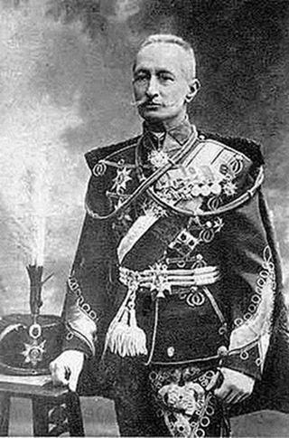
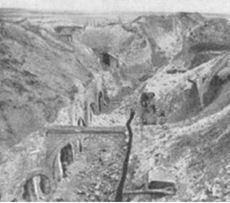
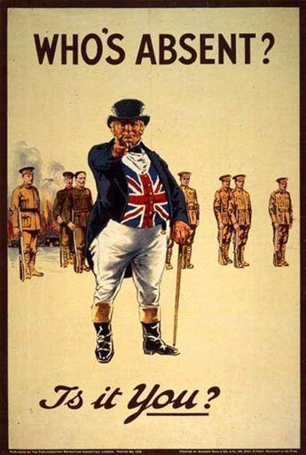
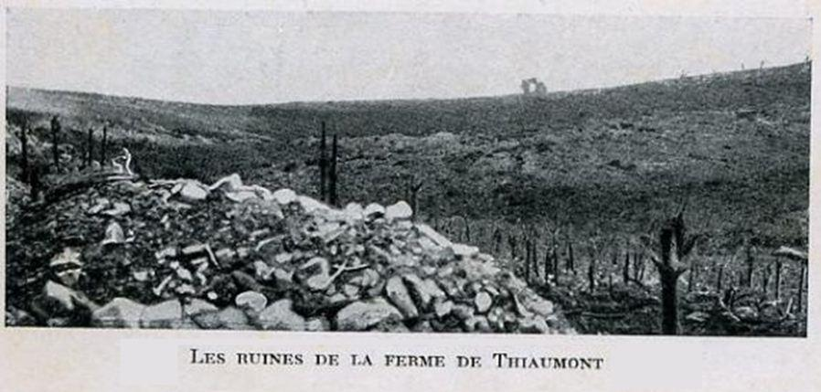
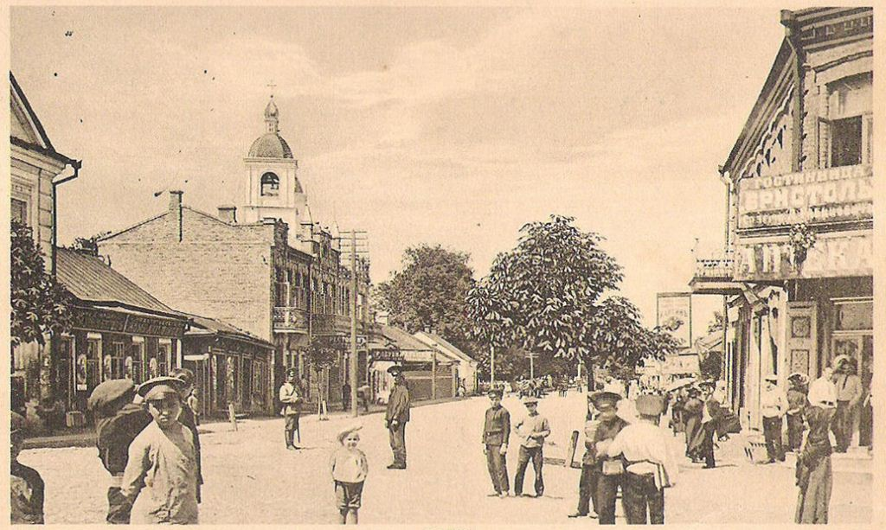
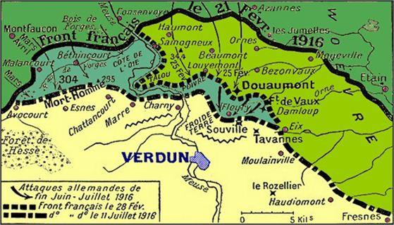
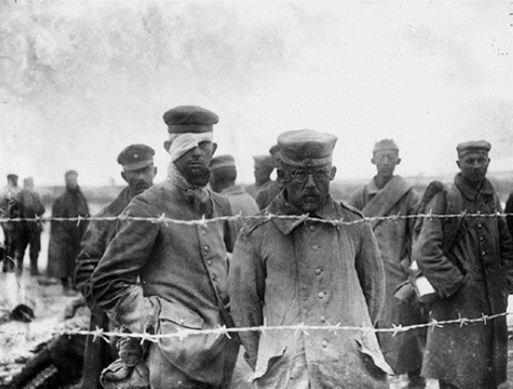
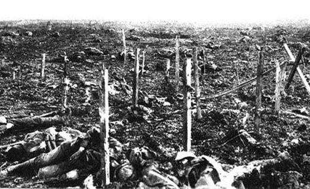
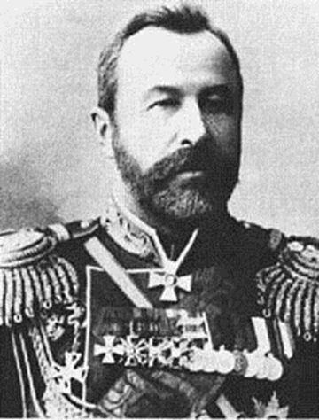

Les opérations de guerre, prises dans leur ensemble, ne sont pas en apparence aussi satisfaisantes pour les armées de l'Entente que pendant les semaines précédentes. En ce 667ème jour de guerre et après cent jours de bataille à Verdun, la lutte gigantesque dans laquelle se trouvent engagées en avant de Verdun les armées allemandes et françaises revêt un caractère d'une violence inimaginable.
Du jeudi 1er juin 1916 au dimanche 4 juin 1916
Sur les fronts belge et français
Un vif combat a eu lieu à l'avancée d'Ypres, sur un front d'environ 3 kilomètres, entre Hooge et la ligne de chemin dé fer Ypres-Commines : l'infanterie ennemie a réussi à pénétrer dans quelques éléments de tranchées anglaises.
Le fort de Vaux et le plateau de Douaumont paraissent devenus l'objectif principal de l'état-major allemand, sans cependant négliger les attaques de détail sur la rive gauche du fleuve, du village de Cumières et du bois des Caurettes jusqu'au bois d'Avocourt, en passant par la cote 286, versant sud du Mort-Homme, la cote 304 et la cote 287. Malgré les pertes effroyables que subissent nos ennemis, la pénétration allemande est insignifiante.
Une grande bataille navale a été livrée dans la nuit de mercredi au jeudi 1er juin, par une partie de l'escadre anglaise à la flotte allemande de haute mer : le théâtre de l'action a été le sud du détroit de Skager-Rack, entre la côte norvégienne et la côte danoise et le littoral du Jutland. La division allemande commandée par l'amiral von Scheer fut aux prises d'abord avec une division de croiseurs anglais; puis apparurent les grands bâtiments de combat sous les ordres des amiraux Beatty et Jellicoe. L'amiral von Scheer, sentant la situation compromise, donna l'ordre de la retraite : ses unités se réfugièrent, non sans désarroi, derrière Heligoland ; quelques-unes contournèrent le Danemark par les Belt. Les pertes anglaises sont lourdes ; celles des Allemands sont équivalentes par le tonnage et le nombre des existences sacrifiées.
Sur les fronts russes
Le front russe d'Europe est stationnaire bien que, depuis trois semaines, les dépêches de Petrograd aient annoncé qu'en Galicie et en Bessarabie, l'armée de nos Alliés était prête pour l'offensive et que 150 000 Autrichiens aient été distraits, d'après les critiques militaires, pour être envoyés au Trentin.
En Arménie et en Mésopotamie, les Turcs ont reçu des renforts austro-allemands et l'avance du grand-duc Nicolas s'en trouve ralentie : les Russes ont même dû évacuer la position de Mamahatoum, sur la route d'Erzeroum à Erzindjean. Les Turcs ont réussi, en effet, à amener, sur ce point vital, des troupes nouvelles et, peu à peu, sont passés de la défensive à l'attaque.
Du lundi 5 juin 1916 au dimanche 11 juin 1916
Sur les fronts belge et français
L'activité se continue sur la partie du front occupée par l'année britannique : aux environs d'Ypres les attaques violentes sont réciproques, surtout à l'est de la ville; mais le centre de l'action se porte sur Hooge ainsi que près du chemin de fer et du canal d'Ypres à Comines.
Si les Allemands ont pu prendre possession des tranchées de première ligne anglaises établies dans le village en ruines d'Hooge, de leur côté, à l'est du Bois-Grenier, les troupes australiennes ont pénétré chez l'ennemi; d'autres fractions anglaises ont occupé des tranchées adverses, à la Boisselle. Beaucoup d'autres actions sont signalées à Olivers, Souchez, Loos, Liévin, Neuve-Chapelle, Neuville-Saint-Vaast et Givenchy ; mais rien ne fait encore prévoir une offensive générale, quoique l'ennemi concentre des forces importantes en Belgique et principalement à Tournai.
Les Allemands viennent d'occuper le fort de Vaux : avec Douaumont, c'est deux forts, sur les dix-huit qui entourent Verdun, dont nos ennemis se sont emparés après quatre mois d'attaque et avoir subi des pertes effroyables de 400000 hommes mis hors de combat. L'ennemi continue, malgré ces pertes, à appliquer le programme de von Falkenhayn qui ordonne d'arriver à la prise de Verdun, quelque coûteux que soit l'effort.
« Le Hampshire », qui portait lord Kitchner, ministre de la guerre anglais, a heurté une mine, près des Orcades, par une mer furieuse lord Kitchner et toute sa suite ont trouvé la mort. C'est une très grosse perte pour les Anglais et les Alliés.
M. Briand, président du Conseil, et le général Joffre, sont allés à Londres s'entretenir avec les principaux ministres anglais.
Sur le front russe
 Le général Alekseï Alekseïevitch BroussilovSur le front de Russie d'Europe, l'irruption soudaine des troupes russes en Galicie et en Volhynie, sur une longueur de 160 kilomètres, a mis hors-de-combat 100 000 Austro-Hongrois et fait plus de 100000 prisonniers. Le général en chef russe, Broussilov, a déclaré que ce n'était pourtant pas encore l'attaque générale. Ces résultats ont produit une diversion considérable sur le front du Trentin où le contre-coup s'est fait utilement sentir.
Le commandement russe ne veut rien dire encore, en dehors de l'occupation de Loutsk, sur les unités engagées et les lieux où se poursuivent les opérations. Mais la poussée russe est telle que Kovel, Lemberg et Czernovitz sont menacées : les autorités autrichiennes et la population civile évacuent ces villes.
Du lundi 12 juin 1916 au dimanche 18 juin 1916
Sur les fronts belge et français
Sur les lignes anglaises, les communiqués enregistrent l'activité d'artillerie déployée de part et d’autre ; mais pas plus au canal de la Bassée qu'à la redoute Hohenzollern, vers Souchez qu’à Hooghe, les résultats obtenus par les uns ou les autres n’ont de véritable importance sur l'action générale. M. Asquith, premier ministre du Royaume-Uni, vient de répéter ce qu'avait dit le général sir Douglas Haig : « Le concours de nos forces est acquis au général Joffre et les décisions qui seront prises le montreront. ». En attendant, l'armée anglaise se renforce chaque jour.
Sur les points du front les plus divers, ouest et est de Soissons, Champagne, Argonne, Vosges, les actions de détail de plus en plus fréquentes ne semblent avoir pour but que d'empêcher des déplacements de troupes ennemies.
 Verdun - Juin 1916Autour de Verdun, les communiqués de la semaine, à part deux ou trois actions de détail, n'ont relaté que des combats d'artillerie. L'effort de l'ennemi se porte actuellement sur la zone fortifiée de Souville à Tavannes qui défend l'étranglement des côtes de Meuse, au point où il atteint à peine 5 kilomètres de large, traversé par la route nationale de Verdun à Metz et par la voie ferrée : les Allemands n'ont pu encore aborder directement cette ligne et ils se trouvent arrêtés à 2 kilomètres environ au nord, entre la ferme de Thiaumont et le ravin de Damloup.
Sur le front russe
Pour les Russes, la situation continue à être brillante et, depuis huit jours, les diversions tentées sur leur front, vers le Nord, par le maréchal Hindenbourg, n'ont donné aucun résultat utile.
Un combat naval qui s'est produit, dans la nuit du 13 juin, dans la Baltique, à quelques relations avec les projets, allemands contre ce front nord : des vapeurs allemands convoyés par des chalutiers armés, un croiseur auxiliaire et deux destroyers ont été attaqués par une flottille russe ; le croiseur et la plupart des bâtiments allemands ont été coulés.
Les Russes étendent rapidement leur avance aux points où ils ont percé le front ennemi. Sur la Strypa inférieure, où ils ont occupé déjà de nombreuses positions au nord-ouest de Buczaz, l'aile droite autrichienne est complètement débordée.
A la suite des succès russes sur le front méridional, les Allemands ont évacué quelques-unes de leurs positions dans la région de Pinsk et travaillent à se fortifier sur la rive gauche du Pripet.
Sur la frontière de Galicie, au sud de Loutsk et au nord-est de Lemberg dont ils ne sont plus qu'à 50 kilomètres environ, les Russes ont occupé Radzivillow, ville de 7000 habitants.
Ils ont occupé également Czernowitz. Entre Czemowitz et la frontière roumaine, sur un front de 15 kilomètres, les Autrichiens ont accumulé les travaux de défense: leurs adversaires s'efforcent depuis plusieurs jours d'y faire une trouée dans le secteur de Bojan; ils ont tenté à diverses reprises de passer le Pruth.
Du lundi 19 juin 1916 au dimanche 25 juin 1916
Sur les fronts belge et français
La discrétion des bulletins de sir Douglas Haig ne fait pas ressortir l'importance des opérations sur la ligne anglaise : il en résulte qu'à la période de préparations des organisations de tireurs d'élite d'équipée de grenadiers et d'artillerie lourde, a succédé une série de chocs dont l'intensité grandit progressivement. Le 24 juin a été le premier jour de l'application de la nouvelle loi sur le service militaire en Grande-Bretagne : tous les hommes de dix-huit à quarante et un ans sont considérés, désormais, comme dûment enrôlés pour la durée de la guerre.
De nombreuses attaques de détail ont eu lieu en Picardie, entre l'Avre et l'Oise : l'Avre passe à Roye et l'Oise à Noyon; c'est ce qui donne de l'importance à ces opérations préparatoires.
Bien que continuant leurs attaques dans la région d'Avocourt et au Mort-Homme, les Allemands cherchent à tout prix à enlever devant Verdun les lignes de résistance sur la rive droite de la Meuse, de Thiaumont et Tavannes par Fleury et Souville, c'est cette partie qui détend l'étranglement des côtes de Meuse où passent la voie ferrée et la route de Verdun à Metz. L’ennemi n'a pu aborder cette ligne de défense mais il a pu s'emparer de la redoute de la ferme de Thiaumont.
Quels que soient ses pertes effroyables en hommes et l'usure de son matériel, l'ennemi, depuis le mois d'avril, n'a avancé que de 14 mètres par jour.
Sur le front russe
 Pinsk - 1916L'avancée russe se poursuit avec moins de rapidité qu'au début. Les raisons de ce ralentissement ont été données par le général Schouwaieff, ministre de la Guerre en Russie; il faut se consolider sur le terrain conquis et procéder au transport de vivres et de munitions par des chemins souvent difficiles. Pour retarder et briser cette avance, les Allemands sont arrivés au secours de leurs alliés. La présence d'Hindenbourg était indispensable sur le front nord : le général allemand a pris l'offensive sur le canal Ogumski qui, entre Pinsk et Baronovitchi, relie les rivières Chara et Yasselda.
La bataille est particulièrement vive au nord de Pinsk : cette diversion est la plus sérieuse qui ait été tentée pour soulager l'armée autrichienne.
C'est le général Mackensen à qui incombe la charge de refouler l'armée russe du centre; les Austro-Allemands cherchent à enfoncer un coin destiné à diviser les armées russes marchant sur Kovel.
Grace à l'occupation de Goura, Goumora, Straja, Kuty et Kimplung, toute la Bukovine est aujourd'hui aux mains des Russes.
Les autorités austro-hongroises ont fait évacuer les villes de Kolomea et de Stanislau par la population civile, ainsi que tous les villages environnants, menacés par les Russes.
Du lundi 26 juin 1916 au dimanche 2 juillet 1916
Sur les fronts Belge et Français
La semaine a présenté sur plusieurs points des fronts des Alliés une activité extraordinaire : elle est, en résumé, avantageuse pour les armées de l'Entente.
Sur tout le front de l'armée belge, les actions d'artillerie ont gagné en intensité : les tirs de destruction exécutés sur les tranchées allemandes vers Dixmude ont été fort efficaces.
Les Britanniques ont commencé un bombardement méthodique de toutes les positions allemandes sur le front battu par eux et qui mesure tout près de 100 kilomètres, de Boesinghe (au-dessus d'Ypres) à Frise, sur la Somme (en face de Péronne).
 Prisonniers allemands – juin 1916Au nord et au sud de la Somme, les troupes françaises ont également gagné du terrain et fait 5000 prisonniers.
 Lutte pour de Froideterre - 24 juin 1916Devant Verdun, les Allemands ont dirigé toute une série d'attaques contre les forts de Froide-Terre et de Souville, et ont réussi à s’emparer d’une partie du village de Fleury devant Douaumont, situé entre les deux forts. La lutte la plus tragique peut-être de toute la bataille de Verdun s'est alors déroulée dans ce secteur, autour de Thiaumont : cet ouvrage fortifié est pris, perdu, puis enfin repris par nous au milieu d’une canonnade effroyable et des corps à corps extrêmement violents.
Le dispositif de l'ennemi (renforts et réserves rapprochés d'une manière exceptionnelle de la première ligne) prouve, dit le communiqué français, « l'intention d'un effort particulièrement puissant et continu devant aboutir rapidement à un résultat important ».
 Le général Alexeï Nikolaïevitch KouropatkineSur le front russe
Sur front nord, celui de Riga, l'offensive allemande du maréchal Hindenbourg se heurte aux forces russes du général Kouropatkine qui résiste vigoureusement.
Les forces ennemies, puisées au centre, dans la région de Vilna aux marais de Pinsk, ont rejoint les troupes austro-allemandes qui barrent la route à l'aide droite russe du général Broussilov : la bataille est acharnée, car il s'agit d'empêcher les Russes de gagner la ligne Brest-Litovsk, Kovel, Vladimir-Volinski, Lemberg.
Vers les Carpathes, au sud du front, les troupes russes poursuivent leur conquête et s'emparent de Kolomea. Selon les derniers rapports, le total des prisonniers pris durant le mois de juin est de 212000.

Partager cette page